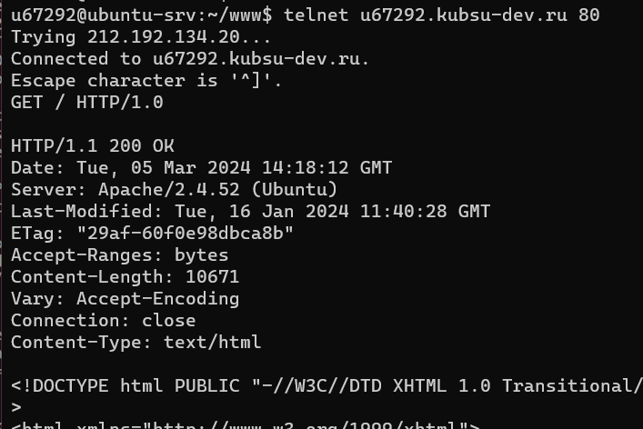
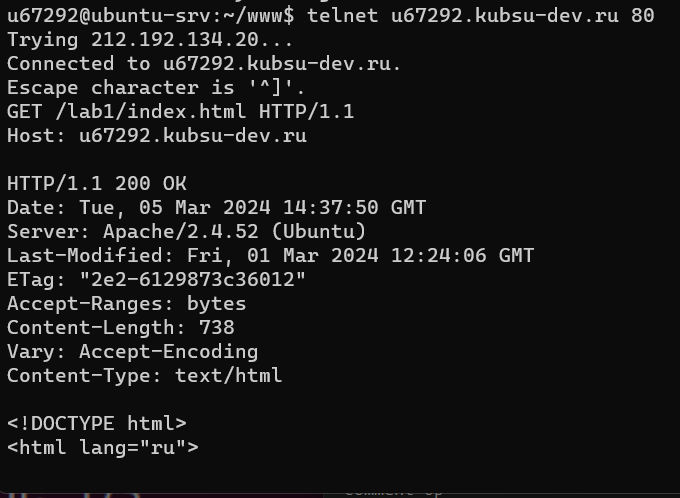
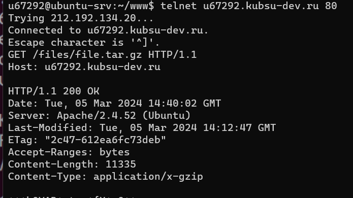
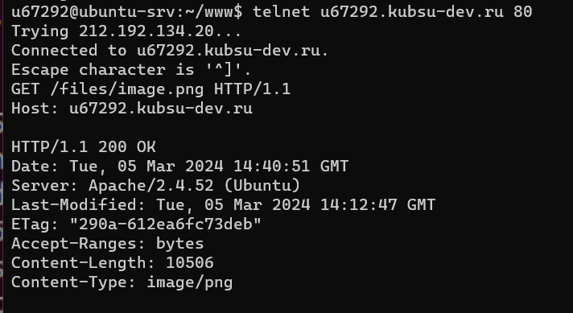
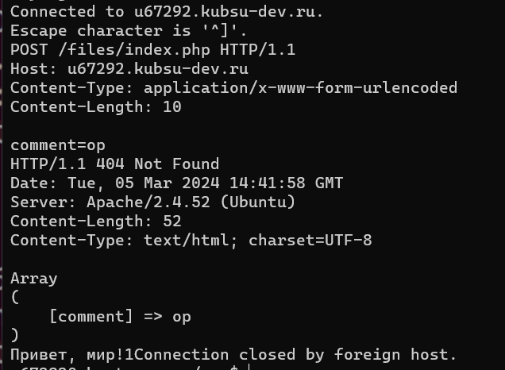
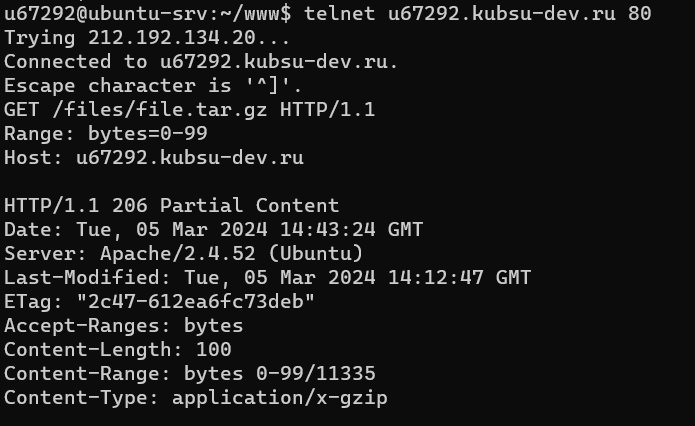
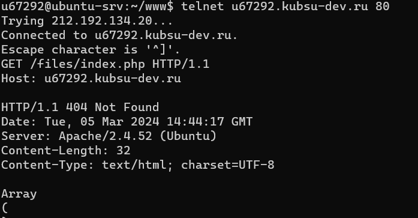

1. получить главную страницу методом GET в протоколе HTTP 1.0;

2. получить внутреннюю страницу методом GET в протоколе HTTP 1.1;

3. Определить размер файла file.tar.gz, не скачивая его. 11335 символов

4. определить медиатип ресурса /image.png. изображение формата png

5. отправить комментарий на сервер по адресу /index.php;

6. получить первые 100 байт файла /file.tar.gz;

7. определить кодировку ресурса /index.php. UTF-8
